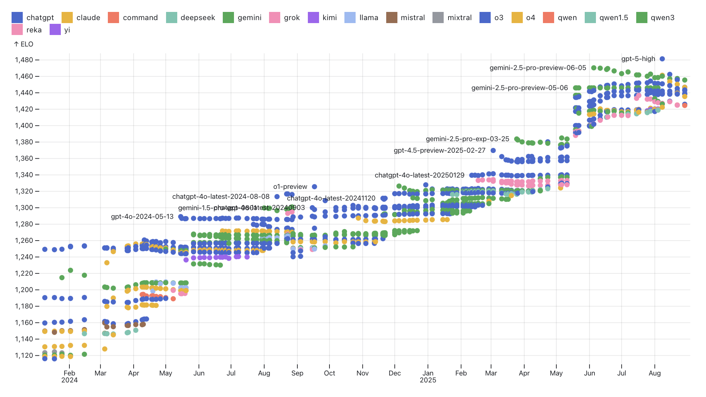

Thanks to comments from Daniel Björkegren, Andreas Haupt, Philip Trammel, Brent Cohn.
- Two weeks ago I went to two fantastic workshops: the Windfall Trust’s “Economic Scenarios for Transformative AI” and the NBER’s “Workshop on the Economics of Transformative AI”. I had just left OpenAI’s Economic Research team, & we had just released our paper, How People Use ChatGPT.
-
What follows is a series of observations about the economics of AI prompted by these two workshops. I’ll also try to explain a little why I left OpenAI and why I’m excited about joining METR.
- Observations.
-
- There is no standard definition of machine intelligence. There have been many attempts to give a definition or a metric of machine intelligence but most have been unsatisfactory. The lack of a common language makes work in this field difficult.
- There is no standard model of AI’s economic impact. Economists have been using a wide range of assumptions to model AI’s impact, there is no standard framework. There seems to me an opportunity for ambitious economists to propose deep models of AI’s impact. A promising line would concentrate on AI’s ability to find low-dimensional representations of the world.
- AI’s impact will not be reflected in GDP. Already 2/3 of ChatGPT use is in solving personal problems rather than work problems.
- Transformative AI will raise the value of resources, lower the value of labor. If computers can do all human work then there will still be scarcity in natural resources (land, energy, minerals). Because humans require resources to do work (energy, land), demand for human labor will go to zero.
- AI will likely have a discontinuous impact on science and technology. Many existing models treat computers as substitutes for humans in the R&D process, but there is reason to expect AI to have a qualitatively different effect on scientific progress.
The Workshops
- The Windfall Trust workshop.
-
This workshop asked participants to discuss four possible future scenarios. Each scenario had a page-long description of what might happen, but they can be summarized as follows:
- Low capability growth (“the incremental path”)
- High capability growth without regulation (“the runaway economy”).
- High capability growth with labor-market regulation to protect jobs (“the great pushback”)
- High capability growth with redistribution (“the post-work society”)

- The NBER workshop.
- The NBER workshop was a set of chapters written for a volume on the impact of Transformative AI on a dozen different areas: R&D, media, labor, competition, etc..

General Observations
- My view: we are driving in fog.
-
My personal view is that it’s reasonable to have high uncertainty about both AI progress, and about the effects of that progress: (1) it’s possible that AI will get very good very soon; (2) it’s difficult to anticipate what will happen if it does.
We are driving in fog: it’s possible we have miles of open road, it’s possible we’re about to hit a tree. It seems sensible to be prepared for either outcome.
- Many AI researchers expect mass unemployment.
-
An important piece of background context for both workshops is the set of ideas which have been circulating in AI circles for the past decade:
- AI will soon be able to replicate most human labor.
- This will cause mass unemployment.
- AI firms should fund a universal basic income.
Academic economists have often bristled at the first two points:
- Economists have often been skeptics about AI progress (see discussion below).
- Economists argue (i) there are many frictions which prevent rapid changes; (ii) even if computers were better at everything than humans, there’s still comparative advantage; (iii) new technology will create new tasks for humans.
- Many economists avoided talking about transformative AI.
-
Both workshops were intended explicitly for discussion of a hypothetical: what would happen if AI capabilities approached human-level performance on most work?
Despite this, most of the economists resisted the hypothetical. Looking at the NBER papers, it seems to me that about half are effectively discussing the effects of AI with existing capabilities, not the effects of transformative AI.
This resistance was a common topic of discussion. People gave a few different reasons for concentrating on contemporary AI instead of future AI: (1) they were doubtful that AI would improve very quickly; (2) they thought it’s more important to work on the economics of actually existing AI; (3) they thought the economics of superhuman AI was formally less interesting; (4) they thought superhuman AI was possible and important, but were nervous about being perceived as overly credulous by their colleagues.
- Defining AI capabilities is surprisingly hard.
-
It would be very useful to have a standard terminology for levels of AI capabilities. It would allow us to split our arguments into two parts: (1) when will AGI arrive? (2) what will happen when it gets here? We suffer from not being able to make this distinction. It is very often difficult to tell how much our disagreements about the impact of AI are due to disagreement about capabilities progress, vs disagreement about the impact of that progress.
Conceptually the solution is simple but practically it’s hard. Many people have tried to define a set of capability levels but none have been widely adopted: most capability definitions are either too ambiguous or too narrow.1
Here are some examples of definitions that are too ambiguous: (1) it can pass a Turing test; (2) it can do “most economically valuable labor”; (3) it can exhibit PhD-level intelligence; (4) it can do the job of a customer service worker. Each of these covers a very broad a range of interpretations, including some such that 2024-level models could already do this.
Here are some examples of definitions that are too precise: (1) it can solve ARC-AGI, (2) it can write a paper that passes peer review at NeurIPS, (3) it can earn $1M. These are relatively unambiguous but it’s also easy to imagine cases where a model passes these tests while it still has limited economic value.
I think of this as a problem that is unsolved but which likely does have a solution. It seems plausible that someone will propose a crisp definition that is both unambiguous and general, and we’ll all see in retrospect that it makes sense.
- I don’t think people appreciate the speed of AI improvement.
-
Speakers at the NBER workshop gave various examples of things the models still couldn’t do: (1) solve ARC-AGI puzzles; (2) extrapolate world models; (3) operate vending machines. These are all reasonable examples of limitations as of September 2025, but we should at the same time mention the rate of change. It seems very likely that the primary examples of tasks that AI cannot do in 2025 will turn into tasks that AI can do in 2026 (the same was true in 2024 and 2023).
Some general observations about the rate of progress:
- ARC-AGI is falling quickly. LLM scores on ARC-AGI-1 went from around 10% to 80% over a year, and scores on ARC-AGI-2 went from around 3% to 30% over a few months. It’s true that a large part of the performance improvement was due to writing wrappers, but the models can write their own wrappers, so it seems likely they’ll be able to solve the class of problems which can be addressed by an LLM plus wrapper.
- Benchmarks are falling rapidly. It typically takes around 18 months for a newly introduced benchmark performance to go from 25% to 75%. We are frantically making up new tests to map out the limits of machine intelligence.
- Consumer utility is growing dramatically. People far prefer answers from newer chatbots to older chatbots. The Elo score of models on chatbot arena is growing at around 150 points/year. This implies about a 70% win-rate, and equivalent to the difference in skill between the top-rated chess player in the world and the player ranked 100.2
 From ObservableHQ.
- The AI pessimism has mostly evaporated.
-
Over summer 2024 many economists predicted that AI would have small economic impacts:
- Daron Acemoglu predicted AI would add 0.06% to annual productivity growth over the next 10 years.
- Josh Gans said “I don’t think it will boost growth appreciably” over the next 10 years.
- Robert Gordon predicted small effects.
- Paul Romer predicted small effects.
I have heard much less of this kind of talk in 2025.
- Economists have been modeling diffusion, but ignoring capability growth.
-
Two quantitative forecasts of AI’s GDP impact are Acemoglu (2024) (0.06%/year) and Aghion and Bunel (2024) (1%/year). Both of those papers model AI’s future economic impact as primarily a diffusion process: they treat the arrival of AI as a one-time shock like electricity or the steam engine which is gradually adopted.
I think this a bad assumption because AI’s capabilities are getting dramatically better over time, and we don’t know where the ceiling is.
We could decompose the growth in LLM adoption over a given period into (i) quality growth; (ii) diffusion. It’s very difficult to separate these, but I think a reasonable guess is that growth over the last 12 months (Sept 2024 to Sept 2025) is about 1/2 diffusion of existing capabilities, and 1/2 the causal effect of new capabilities (precisely: growth would’ve been half as large if models had been frozen in Sept 2024). If this is true then a forecast which was just based on the diffusion of existing capabilities would have dramatically under-estimated the impact of AI, and the gap would become larger as the horizon got longer.
Of course it is more difficult to forecast a process which has elements of both diffusion and quality growth, but I think we need to try, and we shouldn’t rely too much on forecasts only of diffusion.
- GDP will miss a lot.
-
There are two reasons why focussing just on GDP will miss important effects:
AI will change relative prices. It seems likely that AI will lower the price of services (especially digital services) much more than the price of goods. If we just talk about the effect of AI on output overall, without distinguishing across domains, I think we will miss a lot.
AI services won’t show up in GDP. AI is already providing a great deal of value (there are 700M ChatGPT users), but the value won’t show up in GDP by our normal accounting methods. In fact it’s plausible that AI reduces GDP because it reduces demand for expertise: I no longer call my garage-door-repair guy, because ChatGPT tells me how to fix the door. Services are generally accounted for in GDP just by the wages paid to service-providers. If people substitute from human service-providers towards AI then measured GDP will fall even though true output has increased.
- We avoid asking where our preferences come from.
-
This is a more philosophical point. Economists take it as given that it’s good for people to get what they want, but we don’t talk much about where those wants come from. This silence feels particularly notable when talking about transformative AI.
Economists treat everything as an engineering problem: if we know the shape of preferences, and the shape of the technology, then we can get a sense of tightly one will fit into the other, and whether we should be interfering. Thus we spend a lot of time discussing peoples’ preferences: labor vs leisure, goods vs services, in-person vs remote.
We don’t often talk about where those preferences come from. But I think we all roughly agree on what forms preferences: they are primarily from evolution (we are hard-wired to prefer things that were correlated with survival), and proximally from socialization (we learn to prefer things that we saw our parents prefer).3
What does this mean for transformative AI? (1) the world in which preferences are maximized might not look intuitively like a utopia, e.g. maybe it would be people endlessly stimulating their pleasure receptors; (2) that people brought up in different ways would choose different utopias, and there’s no principled way to choose between them; (3) that living in a world with AI will change peoples’ preferences, making it hard to predict where we will end up.4 Different societies have already chosen to use their additional surplus in very different ways: to have more children; to devote more time to praising and glorifying god; to have more time at leisure; to consume more goods and services; to live heroically. Once you’ve been raised with a certain set of values they are somewhat fixed. It seems to me .
We don’t have a standard model of AI.
- The field still seems a little inchoate.
-
It seems to me that the field of economics-of-AI is still pretty open:
There is no standard way of modelling AI in economics.
There is no commonly accepted definition of Artificial General Intelligence, or Superintelligence, or Transformative AI.
There are relatively few canonical models in the economics of AI. The closest are perhaps: (1) the task-based model of automation, in which capital is used to perform human tasks (Zeira (1998)/Acemoglu and Restrepo (2018)); (2) the Aghion, Jones, and Jones (2019) model of automation’s effect on economic growth.
Brynjolfsson, Korinek, and Agrawal (2025) is a “research agenda for the economics of transformative AI”: it seems to me that it lists many good questions but cites relatively few papers, and the papers it does cite are generally treated only as conjectures, rather than authoritative.
- Each paper used a different assumption about AI.
-
Each of the papers in the NBER workshop used some assumption about how AI changes the production function, but there were many different assumptions. There is no standard way of modelling AI in economics.
Some of the ways that AI is modelled:
- Capital can do a wider set of tasks.
- Humans can do certain tasks more quickly.
- Humans can do a wider range of tasks.
In many papers there’s no specific assumption on the types of task, just a parameter that reflects the share of tasks affected. In some papers there are more structural assumptions on how tasks are affected, but there are a wide variety of assumptions, e.g. AI gives better predictions, or AI shares information. In some papers there are empirical assumptions, e.g. using an index of “AI exposure”.
- We are making some progress in characterizing AI ability.
-
In 2023 and 2024 AI ability was often described in terms of its grades on standardized tests (SAT, GRE, LSAT), or by the human-equivalent years of education, e.g. Leopold Aschenbrenner and OpenAI talked about “college-level intelligence” and “PhD-level intelligence.” This was a reasonable way of trying to make comparisons but clearly had limits: LLMs were PhD-level at some tasks, but kindergarten level at others.
In 2025 METR (Kwa et al. (2025)) made a good argument that a more parsimonious metric of ability is the human-time-length of tasks.
It seems to me that having a better characterization of AI abilities, and the difference between AI and human abilities, remains a huge open question, but almost all questions about the impact of AI depend on this question. This is what I’m personally most interested in working on, and part of the reason why I’m leaving OpenAI and joining METR.
A Promising Direction: the Statistical Structure of the World
- AI’s effect on a domain depends on that domain’s statistical structure.
-
This will be a somewhat vague statement: my guess is that the most satisfying explanations of AI’s impact across different domains of human life (entertainment, news, hiring, shopping, etc.) will refer to the statistical properties of those domains, e.g. the latent dimensionality, or the strength of correlations across people.
Put another way: are there aspects of the statistical structure of the domain which a human brain can appreciate, but a computer cannot? are there aspects which a computer brain can appreciate but a human brain cannot? We already have some well-established statistical theory on the .
- Examples of economic implications from statistical structure.
-
Here are a few brief cases in which the equilibrium economic effect of AI is determined by the underlying statistical structure of the domain. My conjecture is that these types of observations could be formalized in a common framework.
- The concentration of the market for AI depends on the dimensionality of the world. If the world is intrinsically high-dimensional then the returns to model scale will be steadily increasing, and so we should expect high concentration and high markups. If instead the world is intrinsically low-dimensional then the returns to scale will flatten, and there should be low concentration (high competition) and low markups.
- The effect of AI on scientific progress depends on the structure of the world. I give this argument below: if the world has a simple latent structure then progress will be bottlenecked more by intelligence than by data, and so advances in AI will dramatically accelerate scientific progress, without being bottlenecked on more data collection.
- The wages paid to an occupation depends on the work’s latent dimensionality. If the work consists of tasks with high latent dimensionality then the returns to experience and ability will be high, and so wages will be high. As AI changes the incremental effect of human experience and intelligence we should expect it to change the structure of wages.
- The demand for compute will depend on the self-similarity of the world. If 7 billion people all have very different problems then there are few efficiencies we can make in inference (through caching and distillation) and the share of GDP paid to compute will be high. If instead they have similar problems then the returns to additional compute will fall rapidly (demand will be inelastic) and the share of income paid to compute will be small.
- The value of a matching algorithm depends on the dimensionality of preferences. If the latent structure of preferences is very simple then classic collaborative filtering algorithms will be very efficient, and neural nets will have small additional effects (e.g. suppose preferences over movies can be largely expressed on a single latent dimension). But if preferences are highly idiosyncratic then more advanced AI, and wider data sources, will have big effects on equilibrium.
AI as Knowledge Sharing: Higher Welfare, Lower GDP
- When I get confused about equilibrium effects I think of a village.
-
I find it really useful to think of a village of people who exchange their labor according to their pattern of comparative advantage (a programmer, a lawyer, a dentist). We can then ask what will happen to the equilibrium if AI makes some people more productive at some task.5
- What happens if AI makes people better at programming?
-
This model gives nice crisp predictions:
- If one programmer gets better at programming: that person’s wages go up, there is a small harm to other programmers, and a small benefit to other non-programmers.
- If all programmers get better at programming by a fixed ratio: the price of programming goes down but the relative wage of programmers stays the same (the benefit accrues mostly to the rest of the economy).
- If everybody gets better at programming by a fixed ratio: the price of programming goes down, the relative wage of programmers stays the same (exactly as in the above case).
- If low-skill programmers get better at programming: their wages go up, the wages of high-skill programmers go down.
- If AI shares knowledge then welfare increases, but GDP falls.
-
Suppose differences in productivity are entirely due to knowledge, and suppose AI diminishes that knowledge gap. Intuitively, with ChatGPT in your pocket you now can do the work of a lawyer, a doctor, a carpenter. We can use the differentitated labor model above to get immediate implications. First suppose there are no trade costs:
- If the pattern of specialization is symmetric (people have different comparative advantages, but they all earn the same wages) then nothing will change, because you have no reason to switch specialities.
- If there are inequalities (some people earn more) then knowledge-sharing will cause migration from low-wage to high-wage occupations, increasing aggregate income but lowering the income of the richest (this is the same as the effect of catch-up technology growth in a trade model.)
Next suppose there are some trade costs:
- GDP will fall, because a flattening of comparative advantage implies it’s relatively easier to do services yourself, instead of trading for them.
Note that trade costs on services are high – it’s much easier to do things for yourself than pay someone else to do it. The average marginal tax rate on labor is probably around 30%, on top of all sorts of other frictions from contracting.
If AI can do everything then wages will fall.
- There’s a Ricardian argument that AI will cause wages to increase.
-
Suppose computers can do absolutely everything that a human can do, with zero input cost: then humans will just specialize in the things they can do relatively better than computers, i.e. their comparative advantage, and this will make wages higher. Pascual Restrepo made this argument, similar arguments are in Caselli and Manning (2019), Smith (2024), Trammell and Korinek (2025) and Korinek and Suh (2024).6
- This depends on no scarce resources.
-
This reassuring conclusion depends on there being no other scarce inputs which humans and computers compete for. In fact humans do have resource inputs - say 100 square feet and 2000 calories/day. If a computer can do every task at a lower resource cost than a human then there will be no humans employed in equilibrium.7 In the hypothetical world this implies that humans who do not own land would starve: the price of their labor, denominated in energy, would fall below subsistence level.
-
Among people who are still alive (because they own land, or from charity), would they work? Only if the incremental resource cost of working was below the resource cost of using a computer for that job.
-
A thought experiment: suppose we have a stock of A100 chips, then we start introducing more powerful H100 chips. Assume the H100 can do more tasks/hour across all tasks. As we acquire H100s we will keep using A100s for the jobs they are comparatively better for. But once we have sufficiently many H100s we will start to unplug the A100s to make room.
- I think scarce resources will bind.
-
The argument about scarce resources isn’t novel, it’s mentioned in all the papers listed above but they all mention it in passing as an additional consideration that might change their conclusions. But I think if we take seriously the hypothetical (that computers can do all work that humans can) then the resource constraints are very real.
- I found it useful to have a concrete scenario in which AI can do everything humans can do.
-
TL;DR: everything but land will become dirt cheap, and those who do not own land will have to live off others’ charity.
- Assume that every service and every good can be produced by AI. The inputs are just land, energy, and raw materials. We will also assume there is no intrinsic demand for human labor.
- You can now buy any good at all, price is not a relevant constraint, you just have to choose which object you like and find room for it (you can shop on Amazon with unlimited credit). You can also get any service at the highest possible quality (medical, massage, education, entertainment), price is no longer a constraint, only time.
- However there will still be some scarce resources. For simplicity I’ll say it’s just land (minerals and energy too, but minerals are in land, and energy production requires land and minerals).
- Suppose we flip a switch and plentiful robots appear, what will happen? People who already own land will be able to exchange slices of it for computer-made goods and services at very favorable rates. Those who do not have land will be stuck: their labor has become worthless, they can not exchange it for anything that requires a resource input. If you are living in a rented apartment your landlord will evict you: you have nothing of value you can offer him in exchange for the use of the land.
- Throughout human history people have been born with an endowment of labor that they could use to exchange for goods and services. This will no longer be true: people can exchange their labor for others’ labor, but their labor will no longer have value for land or anything that requires scarce resources.
- Taken literally this implies that people without assets suddenly become entirely dependent on charity. Perhaps the land-rich will collectively redistribute land and resources to the land-poor, and once you have a little land then all other goods and services become close to unlimited.
- Finally we might expect political structure to follow economic structure: if transformative AI causes most workers to lose their economic power, politics may follow.
- A simple model of labor and land.
-
Suppose land and labor are gross complements, that AI is a perfect substitute for labor, and that we have an arbitrarily large quantity of AI. Then the marginal product of labor falls to zero and the entirety of the output will be held by the land-owner. Human labor no longer has any value and workers must live off the charity of the land-owners.
Formally:
\[Y=(\ut{N}{land}^\rho+{(\ut{L}{labor}+\ut{C}{computers})}^{\rho})^{1/\rho}\]
as \(C\rightarrow\infty\) then the marginal product of labor goes to zero, and all income goes to land.
Notes:
- I assumed labor and land are gross complements (\(\varepsilon<1\)). If production was Cobb-Douglas then making labor free implies we would get infinite output from a finite amount of land. As long as there is some limit on total output then land and labor must be gross complements beyond some point.
- I assumed AI labor is free. We could instead assume AI has some resource cost. In that case the price of labor will be driven down to the input cost of AI labor. The input cost of AI labor could be defined in a few ways but they all appear to me low compared to exiting human wages: the land cost of a GPU is a few square inches, the energy cost is 400 watts.
- We could distinguish between two sectors: a sector that requires land (goods) and a sector that requires only labor (services). If we introduce AI as free labor then human wages will retain the same purchasing power for services but their purchasing power for goods will collapse. Concretely: if you try to exchange your labor for goods you will have nothing to offer because the land-holder already has unlimited labor. The model predicts that workers will be not benefit from AI-produced-goods because AI requires land inputs.
AI scientists will be unlike human scientists
- Will efficiency curves start dropping faster?
-
A good way of making the AI R&D question very concrete is to look at historical input-efficiency curves across a lot of different areas, and try to predict where they will go in the future. Should we expect them to start dropping faster? Which ones?
-
In fact I think these efficiency curves are a very good subject for making forecasts about: both as an output (expressing the practical impact of AI), and as an input (a way of expressing the capability of AI, to then make conditional forecasts with).

- Most models of AI R&D are based on human R&D.
- Models of AI’s impact on technological discovery are typically modelled on human R&D, e.g. (1) AI increases the effective supply of human scientists; or (2) AI automates one component of the R&D process. However both are modelled on a production function fitted on data with human researchers, and it’s likely that AI will qualitatively change that production function.
- There’s another way to model this.
-
My instinct is that there’s a different way of modeling this that is more structural. Suppose we have an unobserved landscape, and it can be explored either by a human brain or a computer brain. Humans have been exploring the landscape, finding successively lower local minima, and also finding general patterns in the landscape (e.g. physical laws). We wish to understand how much computers will speed up exploration of the landscape.
{kind=link}


- The effect of AI depends on the type of landscape.
-
Suppose each period we choose an \(x\) to minimize \(y(x)\), where \(y(\cdot)\) is unknown. This is a well-defined explore-exploit problem, and we can characterize the expected progression of efficiency over time (the decline in \(y(.)\) over time) as a function of the statistical structure of the landscape:
- Random landscape: If each \(y(x)\) is completely independent there’s no intelligence needed in choosing \(x\) (beyond keeping track of which locations you’ve already tried). This is just drawing balls from an urn. The growth in efficiency as a function of \(N\) draws depends on the distribution of values of \(y\) (Muth (1986), Kortum (1997)).
- Rugged landscape: If \(y(x)\) is correlated across \(x\) but the correlation is local (e.g. if \(y(x)\) is a Weiner process) then the best-estimate of \(y(x)\) for a new \(x\) will depend only on the neighboring values of \(x\). Callander (2011) and Carnehl and Schneider (2025) characterize the optimal strategy. Again we are not constrained on intelligence, only on data: the extrapolation algorithm is fairly simple.
- Regular landscape: Finally suppose the landscape has some deep latent structure. In this case the best-estimate of \(y(x)\) will depend on the entire collection of previously-observed pairs \((x,y)\), and so we do expect that predictions could be improved with more intelligence, and so AI should have a big impact.8
- Implications of landscape regularity.
-
If the world has a regular landscape then we are not primarily constrained on facts, we are constrained on intelligence. Thus if we build a sufficiently powerful pattern-matching machine our progress might accelerate rapidly.
-
Random lanscapes, where we’d expect little impact of AI:
- Discovering species. If we are making a list of specific objects (planet) or species (viruses), then the observations cannot be well-predicted from first principles, and we inevitably need new observations. Similarly, if we mapping a genome the exact sequence of base pairs requires individual observations.
- Plant breeding. Suppose we breed plants just by selecting the highest-yield mutations (and suppose we don’t observe anything but how well the plant grows). The statistical problem is trivial, and AI won’t help at all.
-
Regular landscapes, where we expect a large impact.
- Folding proteins. We are learning a function from a sequence of base-pairs to a 3D shape. The function is high-dimensional but we have reason to expect a low-dimensional representation which would make it tractable - and AlphaFold found one.
- Discovering candidate drugs.
- AI R&D has already lead to discontinuities.
-
Many fields which have been progressing slowly show a discrete change in the rate of progress when computers took over:
- Progress in solving optimization problems.
- Progress in proving combinatorics theorems (4-color theorem in 1976)
- Progress in chess strategy (Elo has fallen quicker since 1997)
- Progress in protein folding.
Some of these have hit provably global minima: the 4-color them; sphere packing; Ramsey numbers; Nash equilibrium of checkers, connect 4, texas holdem, and chess endgames.
These accelerations have occurred when computer intelligence has surpassed human intelligence for a particular type of pattern-matching. As computer intelligence becomes more general then we should expect more and more lines of progress to start accelerating.
- Aristotle already had the jigsaw pieces.
-
There’s a nice analogy for this: did Aristotle already have enough jigsaw pieces for modern science? Was he constrained on facts or intelligence? Suppose we resurrected him, is it enough to explain our theories, or does he also need to see the data we’ve gathered?
-
It seems to me plausible that we could persuade Aristotle of some of the following, just using facts he was already aware of: that the sun is a star, that the earth goes around it, that the whale is not a fish, that the human is a monkey, that force is mass times acceleration, that temperature is motion, that pitch is frequency.
- Predicting the effect of AI on R&D is intrinsically difficult.
-
The landscape model I described above implies that we should expect AI to have a big effect when some domain has a latent undiscovered structure. But in many cases this is very difficult to know in advance: we don’t know where the floor is. It seems conceivable that there are some very simple undiscovered principles explaining cancer, fluid motion, evolution. But maybe these domains are irreducibly complex.
References
Footnotes
In 2024 Bloomberg reported on an OpenAI project to define five levels of AI capabilities (I worked a little on this). Also in 2024 Google Deep Mind released a 5-level framework, based on the percentile of human ability (level 2 means 50th percentile of skilled human).↩︎
It likely be impossible to approach a 100% win-rate, because (1) a fraction of people give noisy answers; (2) some easy queries have a unique correct answer; (3) some queries are ambiguous, meaning different people who ask the same query will have different preferences, and so no answer could ever get 100% of the responses.↩︎
A nice illustration of the strength of learned preferences: Atkin (2015) shows that people who grow up eating rice will go hungry rather than eat wheat, and that people who grow up eating wheat will go hungry rather than eat rice.↩︎
From the Windfall workshop “post-work society” scenario: “Universities pay people to attend and pursue knowledge among peers; community arts centers; compensate creators; sports leagues provide living wages for participants; childcare receives social recognition and compensation; community gardens and local projects offer meaningful paid work.”↩︎
Precise assumptions: suppose each worker has a given level of productivity at each good, and everyone spends the same fixed fraction of their income on each good (i.e. everyone has the same Cobb-Douglas utility function). This is just a standard Ricardian trade model (Wilson (1980)). As far as I can tell most labor economics models assume a single “skill” dimension with monotone comparative advantage, and don’t consider horizontal differentiation (e.g. lawyer vs doctor), but it seems to me this is important for AI’s effects.↩︎
Korinek and Suh (2024) argue that as AI progresses it will causes wages to increase then decrease, but this is a consequence of a specific assumption: that AI will have identical relative productivity across tasks to humans, and so as AI becomes more capable the equilibrium price vector first moves away from, then returns towards, the vector of human productivities.↩︎
Assuming computers are in sufficiently plentiful supply that we can ignore every other cost apart from their resource cost. If manufacturing computers requires resources then we could include their amortized manufacturing cost. If we have a scarce supply of computers for other reasons then of course this will keep human wages high.↩︎
The closest paper I know of is Agrawal, McHale, and Oettl (2019).↩︎